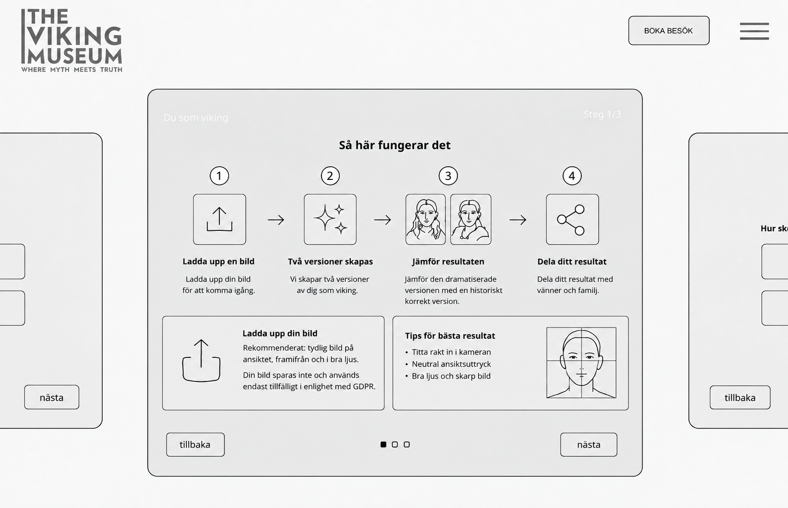
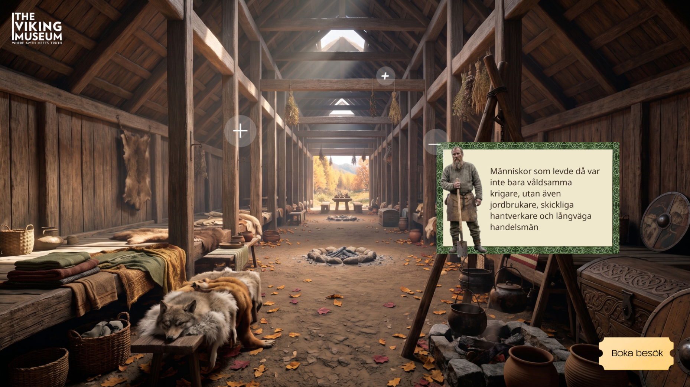
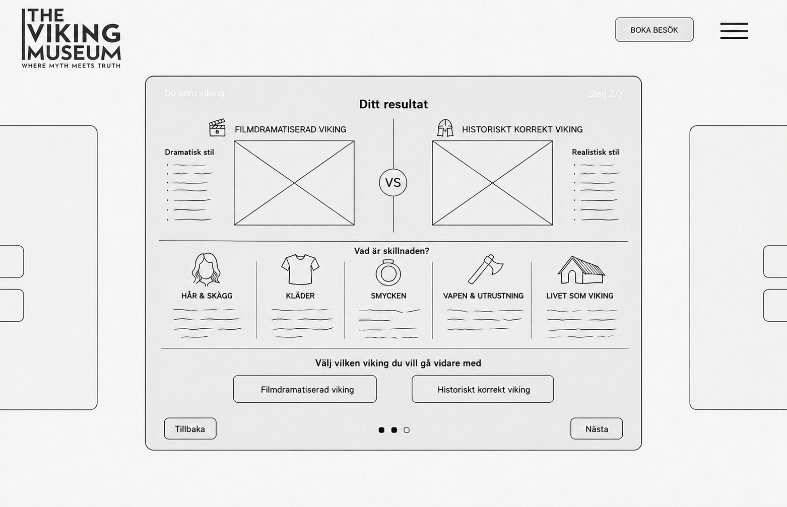
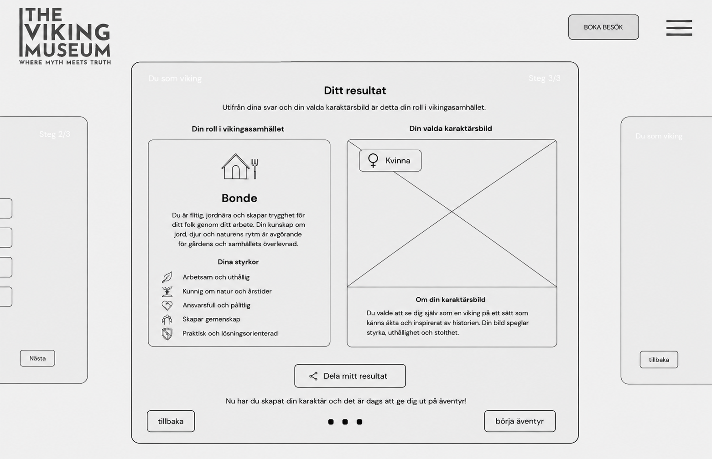

01
Ladda upp en bild
Första vyn sätter förväntningarna och guidar besökaren inför bilduppladdningen.

INTERAKTIV MUSEIUPPLEVELSE
Ett gruppkoncept för Vikingamuseet där besökaren kliver in i ett virtuellt rum, tar del av myter och fakta och fortsätter genom quiz, karaktärsskapande och ett interaktivt överlevnadsspel.

Konceptet togs fram i grupp. Besökaren börjar i ett virtuellt rum med myter och fakta, går vidare till ”Vem är du i vikingasamhället?” och tar sedan med sin roll och karaktär in i överlevnadsspelet Överlev.
Quizet tog jag fram tillsammans med en annan gruppmedlem. Vi arbetade med frågeflöde, val och resultat så att rollen skulle kännas som en naturlig start på resten av upplevelsen.
Karaktärsdelen ansvarade jag för själv. Jag tog fram flödet från bilduppladdning till resultat, inklusive valet mellan en filmdramatiserad och en mer historiskt korrekt tolkning. Rollen från quizet följer sedan med in i resten av upplevelsen.
Första vyn sätter förväntningarna och guidar besökaren inför bilduppladdningen.

Här jämför besökaren två tolkningar och väljer vilken karaktär som ska följa med vidare.

Den sista vyn samlar rollen från quizet och den valda karaktären i ett resultat som går att dela eller ta vidare till nästa del.

Wireframesen visar hur jag arbetade med guidning, jämförelse och övergången från uppladdad bild till en färdig karaktär.
Det jag framför allt tog med mig var hur mycket en upplevelse tjänar på att nästa steg redan känns förberett i det förra. Jag använde Figma för wireframes och flöden och Miro för struktur och gemensamma beslut. Överlevnadsspelet utvecklades av gruppen som nästa steg efter karaktärsdelen.